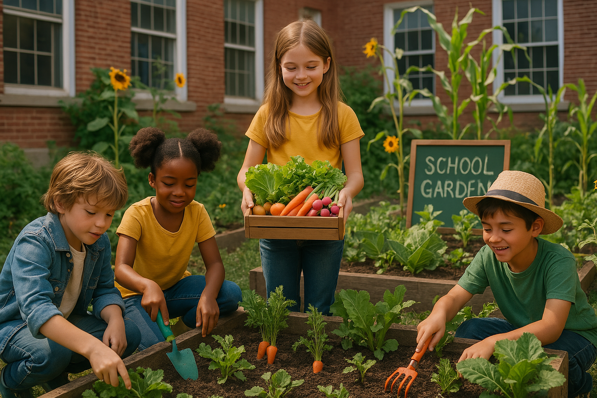
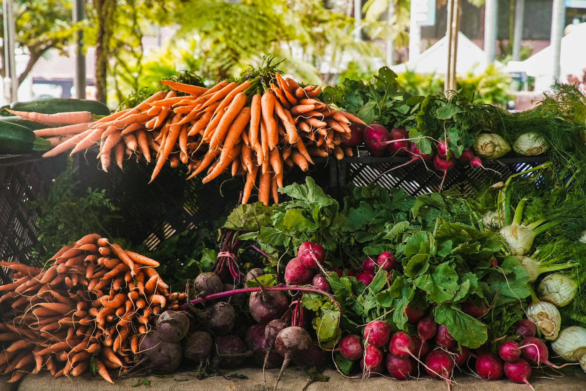
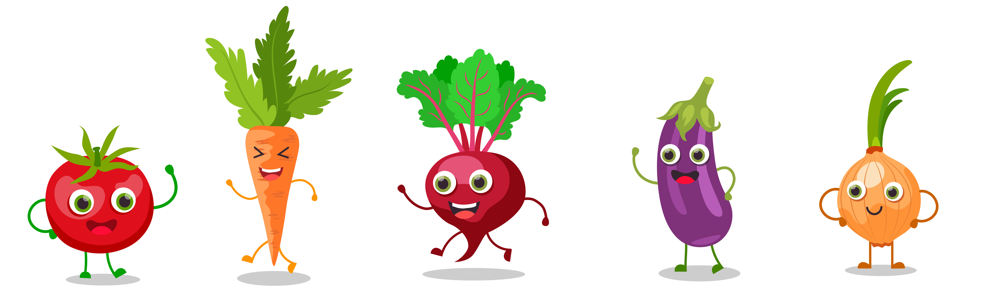
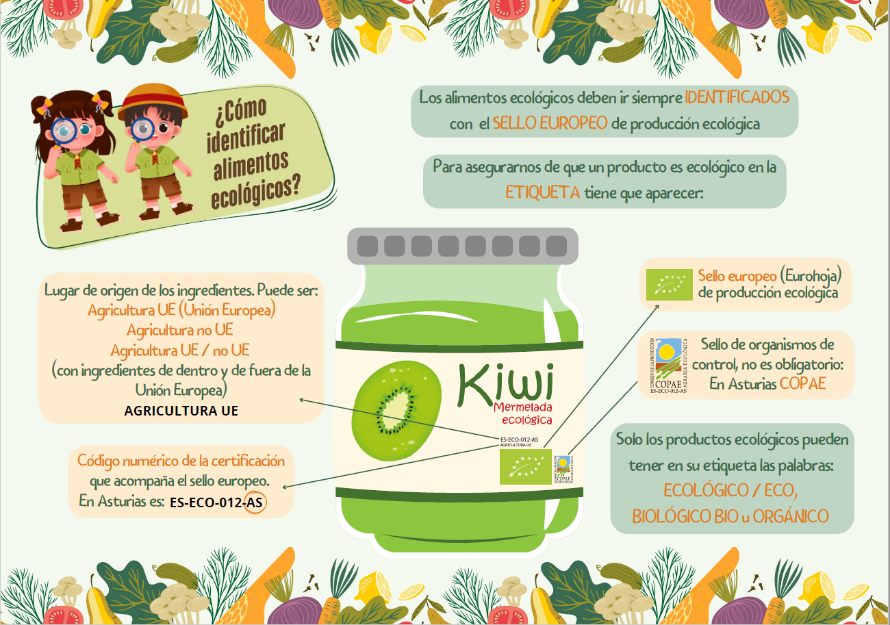
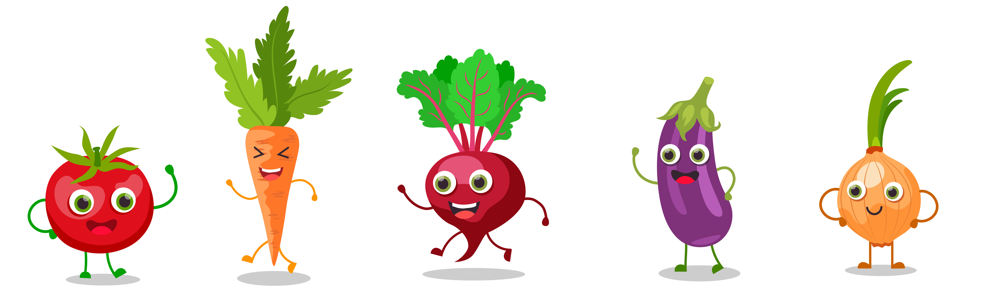
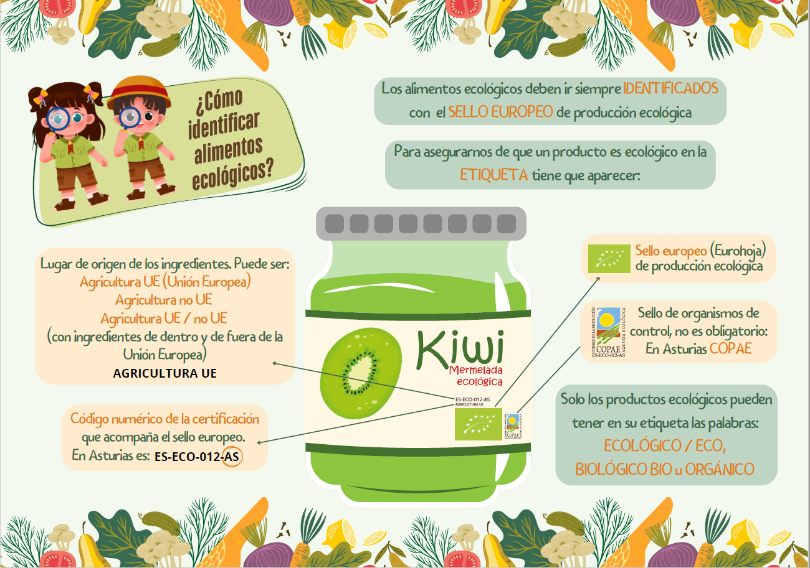

¿QUÉ ES LA RED?

Es una iniciativa impulsada por el Consejo De La Producción Agraria Ecológica Del Principado De Asturias(COPAE), actualmente con la colaboración de Caja Rural de Asturias, con el objetivo principal de divulgar el conocimiento de la agricultura ecológica en los centros educativos del Principado de Asturias. El Huerto Escolar Ecológico representa un recurso educativo con encaje curricular, que fomenta hábitos saludables de vida, como la alimentación, el ejercicio, el consumo responsable o el cuidado del medio ambiente. El objetivo principal es divulgar el conocimiento de la agricultura ecológica y sus ventajas, así como la incorporación progresiva de alimentos ecológicos y locales en el comedor escolar.
¿Quién puede inscribirse?

Cualquier centro educativo del Principado de Asturias con interés puede formar parte de la iniciativa de forma gratuita. Solo tiene que seguir los pasos descritos más abajo. Tendrán prioridad los centros de la Red con mayor implicación en el huerto escolar y en la divulgación de la agricultura ecológica, así como en su participación en el Programa de alimentación saludable y de producción ecológica en los comedores escolares de Asturias de las Consejerías de Salud, Educación y Medio Rural, en el que participa el COPAE, que desarrolla en Asturias los objetivos de la Estrategia NAOS.
¿Cómo inscribirse en la red?

Para apuntarse a la Red de Huertos Escolares Ecológicos de Asturias, hay dos modalidades:
1. Descargar, cumplimentar y remitir a la dirección de correo electrónico, promocion@copaeastur.org, este formulario de
adhesión: Convenio COPAE centros educativos .
2. Por medio del referido Programa de alimentación saludable y de producción ecológica en los comedores escolares de Asturias , indicando que el centro educativo tiene un huerto escolar ecológico.
 


